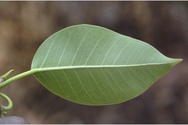
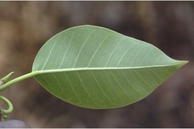

Evergreen tree, up to 30 m tall, with aerial roots, usually epiphytic when young.
ಬಿಳಲು ಬೇರುಗಳನ್ನೊಳಗೊಂಡ 30 ಮೀ. ಎತ್ತರದವರೆಗಿನ ನಿತ್ಯಹರಿದ್ವರ್ಣ ಮಾದರಿಯ ಮರಗಳು. ಸಾಮಾನ್ಯವಾಗಿ ಎಳೆಯದಾಗಿದ್ದಾಗ ಸಸ್ಯಗಳಾಗಿರುತ್ತವೆ.
Evergreen tree, up to 30 m tall, with aerial roots, usually epiphytic when young.
பசுமைமாறாமரங்கள், 30 மீ. உயரம் வரை வளரக்கூடியது, தொங்கு வேர்களுடையவை, இளம்பருவத்தில் பொரும்பாலும் ஒட்டு செடியாக ஆரம்பிக்கின்றன.
Bark green, smooth; blaze cream.
ತೊಗಟೆ ಹಸಿರು ಬಣ್ಣದಲ್ಲಿದ್ದು ನಯವಾಗಿರುತ್ತದೆ;ಕಚ್ಚು ಮಾಡಿದ ಜಾಗ ಕೆನೆ ಬಣ್ಣದಲ್ಲಿರುತ್ತದೆ.
Bark green, smooth; blaze cream.
மரத்தின் பட்டை பச்சை நிறம், வழவழப்பானது; உள்பட்டை கிரீம் நிறமானது.
Branchlets terete, pubescent.
ಕಿರುಕೊಂಬೆಗಳು ದುಂಡಾಗಿದ್ದು ಮೃದುತುಪ್ಪಳದಿಂದ ಕೂಡಿರುತ್ತವೆ.
Branchlets terete, pubescent.
சிறியநுனிக்கிளைகள் குறுக்குவெட்டுத் தோற்றத்தில் வளையமானது, உரோமங்களுடையது.
Latex milky, profuse.
ಜಿನುಗು ದ್ರವ ಹಾಲಿನಂತಿದ್ದು ವಿಫುಲವಾಗಿರುತ್ತದೆ.
Latex milky, profuse.
வெள்ளை நிற பால் அதிகளவு சுரக்கிறது
Leaves simple, alternate, spiral; stipules 0.5 cm long, ovate, pubescent, caducous and leaving annular scar; petioles 1-3 cm long, canaliculate, pubescent when young; lamina 5- 12.7 x 1.2-6.4 cm, ovate or elliptic, apex caudate - acuminate to caudate with blunt tip, base cuneate-acute, margin entire, coriaceous, shining above; midrib raised above; secondary_nerves 8-10 pairs, looped near margin; tertiary_nerves admedially ramified.
ಎಲೆಗಳು ಸರಳವಾಗಿದ್ದು ಪರ್ಯಾಯ ಮತ್ತು ಸುತ್ತು ಜೋಡನಾ ವ್ಯವಸ್ಥೆಯಲ್ಲಿರುತ್ತವೆ; ಕಾವಿನೆಲೆಗಳು 0.5 ಸೆಂ.ಮೀ.ವರೆಗಿನ ಉದ್ದ ಹೊಂದಿದ್ದು ಅಂಡವೃತ್ತದ ಆಕಾರದಲ್ಲಿದ್ದು ಮೃದು ತುಪ್ಪಳದಿಂದ ಕೂಡಿದ್ದು ವಲಯಾಕಾರದ ಗುರುತುಗಳನ್ನುಳಿಸಿ ಉದುರಿ ಹೋಗುತ್ತವೆ;ತೊಟ್ಟುಗಳು 1 – 3 ಸೆಂ.ಮೀ. ಉದ್ದ ಹೊಂದಿದ್ದು ಕಾಲುವೆಗೆರೆ ಸಮೇತವಾಗಿರುತ್ತವೆ ಮತ್ತು ಎಳೆಯದಾಗಿದ್ದಾಗ ಮೃದುತುಪ್ಪಳದಿಂದ ಕೂಡಿರುತ್ತವೆ;ಪತ್ರಗಳು 5 – 12.7 X 1.2 – 6.4 ಸೆಂ.ಮೀ. ಗಾತ್ರವಿದ್ದು ಅಂಡದ ಅಥವಾ ಅಂಡವೃತ್ತ ಆಕಾರ ಹೊಂದಿದ್ದು, ಬಾಲರೂಪಿ- ಕ್ರಮೇಣ ಚೂಪಾಗುವುದರಿಂದ ಮೊಂಡಾಗ್ರವುಳ್ಳ ಬಾಲರೂಪಿ ತುದಿ, ಬೆಣೆ -ಚೂಪಾದ ಬುಡ, ನಯವಾದ ಅಂಚು, ತೊಗಲನ್ನೋಲುವ ಮೇಲ್ಮೈ ಹೊಂದಿರುತ್ತವೆ ,ಪತ್ರಗಳ ಒಣಗಿದಾಗ ಮೇಲ್ಭಾಗ ಹೊಳಪಿನಿಂದ ಕೂಡಿರುತ್ತದೆ;ಮಧ್ಯ ನಾಳ ಮೇಲ್ಭಾಗದಲ್ಲಿ ಮೇಲೆದ್ದಿರುತ್ತದೆ ,3 ರಿಂದ5 ಆಧಾರ ನಾಳಗಳು ಪತ್ರಗಳ ಬುಡದಲ್ಲಿರುತ್ತವೆ; ಎರಡನೇ ದರ್ಜೆಯ ನಾಳಗಳು 8- 10 ಜೋಡಿಗಳಿದ್ದು ಅಂಚಿನ ಬಳಿ ಕುಣಿಕೆಗೊಂಡಿರುತ್ತವೆ;ಮೂರನೇ ದರ್ಜೆಯ ನಾಳಗಳ ಕವಲುಗಳು ಎಲೆಯ ಅಕ್ಷದ ಕಡೆಗೆ ಇರುತ್ತವೆ.
Leaves simple, alternate, spiral; stipules 0.5 cm long, ovate, pubescent, caducous and leaving annular scar; petioles 1-3 cm long, canaliculate, pubescent when young; lamina 5- 12.7 x 1.2-6.4 cm, ovate or elliptic, apex caudate - acuminate to caudate with blunt tip, base cuneate-acute, margin entire, coriaceous, shining above; midrib raised above; secondary_nerves 8-10 pairs, looped near margin; tertiary_nerves admedially ramified.
இலைகள் தனித்தவை, மாற்றுஅடுக்கமானவை, சுழல் போன்று அமைந்தவை; இலையடிச்செதில் 0.5 செ.மீ. நீளமானது, முட்டை வடிவானது, உரோமங்களுடையது, எளிதில் உதிரக்கூடியது மற்றும் வட்டவடுக்களை ஏற்படுத்துகின்றன; இலைக்காம்பு 1-3 செ.மீ. நீளமானது, குறுக்குவெட்டுத் தோற்றத்தில் கேனாலிகுலேட், இளம்பருவத்தில் உரோமங்களுடையது; இலை அலகு 5- 12.7 X 1.2-6.4 செ.மீ., முட்டை வடிவானது அல்லது நீள்வட்ட வடிவானது, அலகின் நுனி வால்-அதிக்கூரியது முதல் வால் போன்றது அதன் முனை மழுங்கியது, அலகின் தளம் ஆப்பு-கூரியது, அலகின் விளிம்பு முழுமையானது, கோரியேசியஸ், அலகின் மேற்பரப்பு பளபளப்பானது; மையநரம்பு மேற்புறத்தில் அலகின் பரப்பைவிட உயர்ந்து இருக்கும்; இரண்டாம் நிலை நரம்புகள் 8-10 ஜோடிகள், ஒன்றொடுன்று விளிம்பின் அருகில் (லுப்) இணைந்தவை; மூன்றாம் நிலை நரம்புகள் அட்மீடியல்லி ராமிபைடு.
Inflorescence syconia, sessile, in axillary pairs, depressed globose; flowers unisexual.
ಪುಷ್ಪಮಂಜರಿಗಳು ಸೈಕೋನಿಯ ರೀತಿಯವುಗಳಾಗಿದ್ದು ,ತೊಟ್ಟುರಹಿತವಾಗಿರುತ್ತವೆ ಮತ್ತು ಅಕ್ಷಾಕಂಕುಳಿನಲ್ಲಿ ಜೋಡಿಗಳಾಗಿರುತ್ತವೆ, ಆಕಾರದಲ್ಲಿ ಅದುಮಿದ ಗೋಳಾಕಾರದಲ್ಲಿರುತ್ತವೆ; ಹೂಗಳು ಏಕ ಲಿಂಗಿಗಳು.
Inflorescence syconia, sessile, in axillary pairs, depressed globose; flowers unisexual.
மஞ்சரி சைகோனியம், காம்பற்றது, ஒர் ஜோடியாக இலைக்கோணங்களில் காணப்படுபவை, அழுத்தப்பட்ட கோள வடிவமானது; மலர்கள் ஓர் பாலானவை.
Syconium globose, 0.5-0.6 cm across.
ಸೈಕೋನಿಯ (ಸಂಯುಕ್ತ ಫಲ) ಗೋಳಾಕಾರದಲ್ಲಿದ್ದು 0.5 ರಿಂದ 0.6 ಸೆಂ.ಮೀ. ಅಡ್ಡಗಲತೆಯನ್ನು ಹೊಂದಿರುತ್ತವೆ.
Syconium globose, 0.5-0.6 cm across.
சைகோனியம் கோளவடிவானது, 0.5-0.6 செ.மீ. குறுக்களவுடையது.


 
